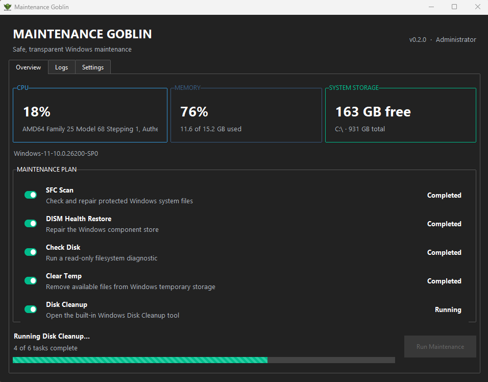
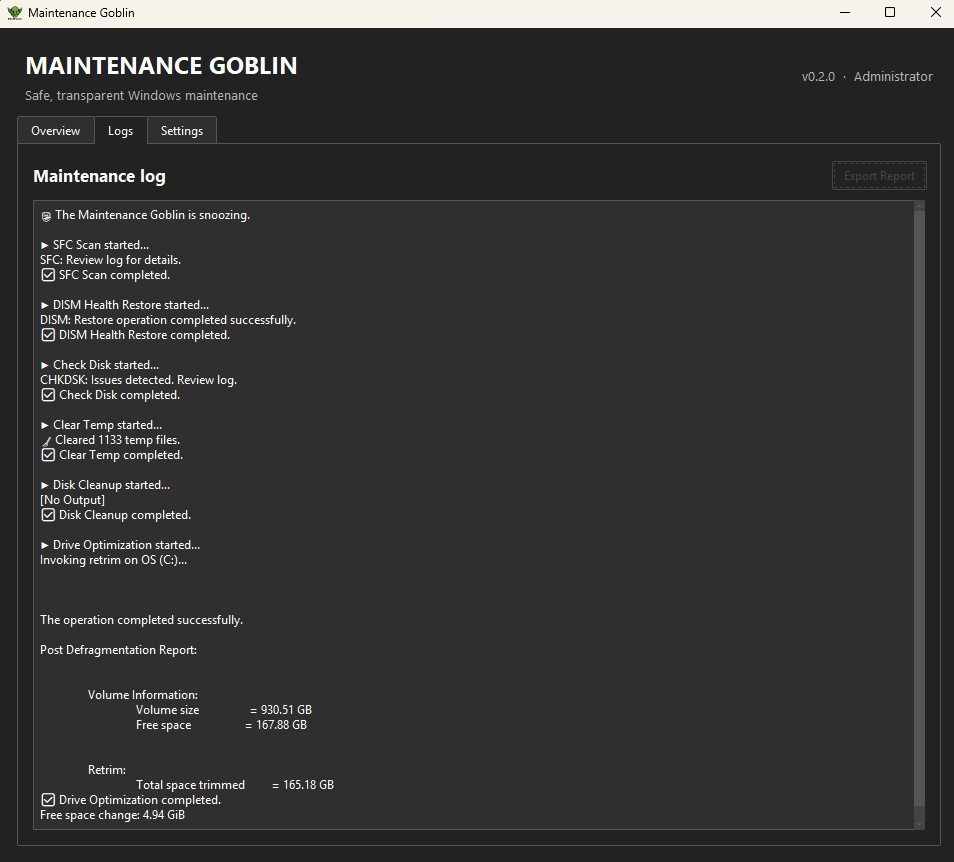

Trusted system repairs
Run SFC and DISM to check protected system files and repair the Windows component store.
Windows maintenance, without the nonsense
Maintenance Goblin puts trusted Windows tools behind one clear, approachable dashboard—with conservative defaults and no miracle claims.
For Windows 10 and 11
The honest optimiser
Maintenance Goblin is a friendly interface for legitimate tools already trusted by Windows: SFC, DISM, CHKDSK, temporary-file cleanup, Disk Cleanup, and drive optimisation.
It exists to make routine system care easier to understand. The project is transparent and open source, with no registry cleaner, fake health score, “RAM booster,” advertising, or bundled software.
What it does
Choose the work you need, then follow each step from the same responsive dashboard.
Run SFC and DISM to check protected system files and repair the Windows component store.
Use read-only CHKDSK diagnostics and Windows' media-aware drive optimisation for the system drive.
Clear available temporary files—skipping locked items—and open Windows Disk Cleanup.
See queued, running, completed, and skipped states, plus task timing and overall progress.
Review live command output and export a timestamped text report for the current session.
Choose from three themes, optionally launch at sign-in, and unlock achievements stored locally.
A look inside


A note about SmartScreen
The current Windows executable is not yet code-signed. Windows SmartScreen may therefore display an Unknown Publisher or unrecognised app warning. That warning reflects the missing signature; it does not mean the app is malicious.
Maintenance Goblin is open source, so you can inspect exactly what it does. Download builds only from the official GitHub Releases page, where a SHA-256 checksum is provided. Code signing is planned for a future release.
Release 0.2.0
Download the standalone executable and checksum from the official release page.
Download Latest ReleaseMade by a human
Maintenance Goblin is an open-source project by Adam Johnston. Follow the work on GitHub or visit ajstudios.dev.
Buy Me a Coffee: TODO — add the verified profile URL.
{kind=link}
{kind=link}